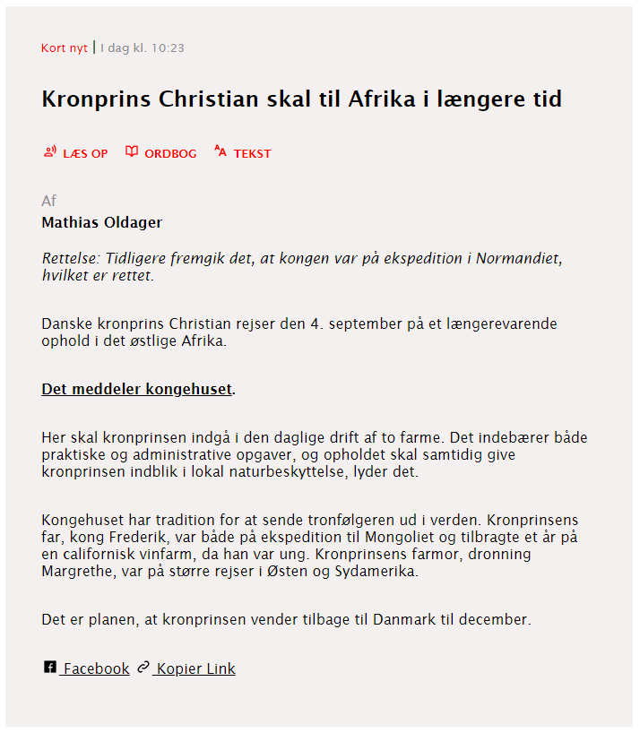
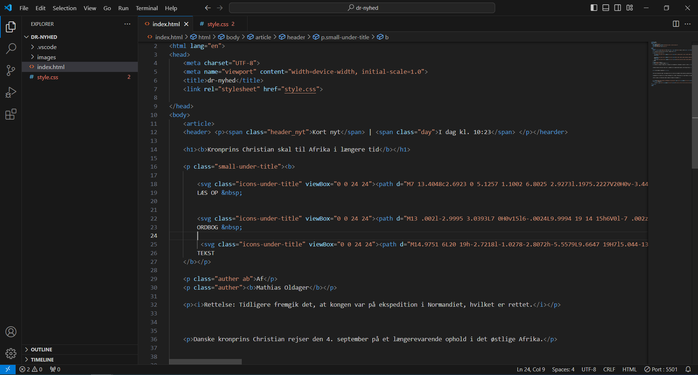
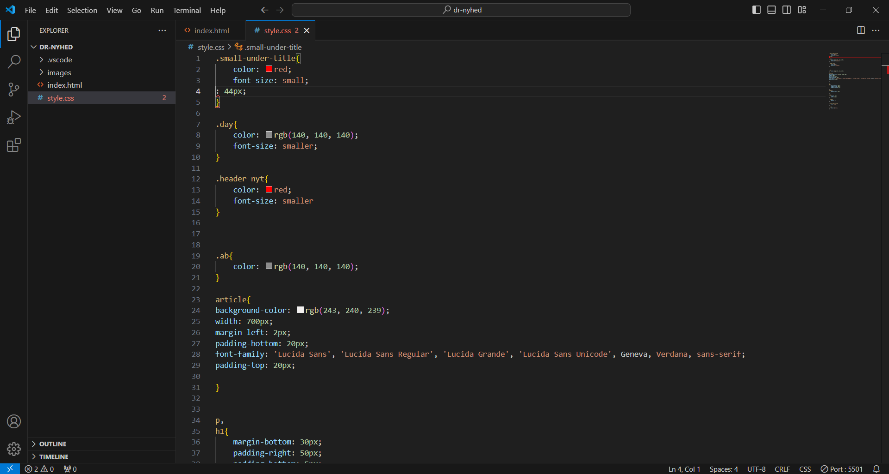

DR Nyhed
I denne opgave skulle vi prøve at genopbygge en nyhedsartikel fra dr.dk så godt som muligt, så den lignede originalen.
Det meste af det er simpelt. Der er nogle paragrapher som vi satte ind ved hjælp af 'p' elementet (ligesom denne tekst), noget tekst større end andet (brug af h1 og 3), noget er med fed (bold), noget rødt og noget sort (color i CSS) osv. Boksen rundt om teksten er bare et 'article' element hvor jeg har ændret baggrundsfarven. Der var dog nogle få ting der drillede lidt.
Nederst på siden er der to links, som begge har et ikon til venstre for dem. Den ene fører til dr's Facebook side, den anden (officelt set) kopiere linket til artiklen, men det har jeg ikke implementeret. Ikonerne er SVG filer vi fik tildelt, som er skaleret ned til at passe i størrelse.
Det er det samme med de røde tekster mellem titlen og paragrapherne, forskellen er bare at der er tilføjet farve både til teksten og SVG'erne.
Den mest tricky del af opgaven var at få teksten helt oppe i venstre hjørne, "kort nyt | I dag kl 10:23" til have have forskellige farver. Resultatet endte med at tilføje en span til hver tekste mellem "|", give dem hver en class for sig selv og ændre farverne med span classene.
Resultat og kode ses her:
  Med denne opgave fandt jeg ud af hvad en SVG er og nogenlunde hvordan den kan bruges, i hvertfald på et basis niveu.
Jeg havde lidt svært ved hvordan man lige skulle sætte det hele op, men ellers var resten meget lige til.